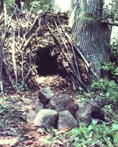
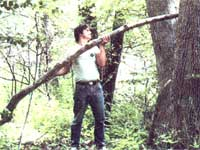
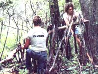
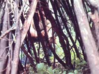
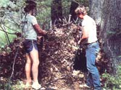
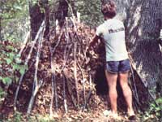

Tom Brown, Jr. was reared in the New Jersey Pine Barrens and brought up in the ways of the woods by his grandfather, a displaced Apache named Stalking Wolf. Today, he is one of our country's-leading outdoor authorities, author of The Tracker and The Searcher, and head of the largest tracking and wilderness survival school in the U.S. (for information, write Tom Brown, Jr., Dept. TMEN, Box 173, Asbury, New Jersey 08802). Knowing all that, you'll surely be as glad as we are that Tom has agreed to do a series of articles for MOTHER, in which he'll share his knowledge of how to survive-in comfort!-in the wilds. With the tracker's guidance, perhaps we can become more ...
A good shelter is the first
requirement for wilderness survival,
and Tom Brown's leaf hutwhich
can keep even a naked inhabitant
warm in the dead of minter is one
of the best. Tom's shelter is
constructed by ...
setting up a ridgepole ...
framing out the hut's sides with sticks ...
brush ...
and leaves ...
then securing the malls with more
branches.
When you're out collecting firewood, foraging for wild edibles, or plowing your fields, you can never be sure that you won't suddenly be faced with a situation in which your survival will depend upon your ability to make a shelter, find food and water, and build a fire. In fact, even if you're 'safely" ensconced in the security of a cabin, a farmhouse, or a city apartment, any number of natural or manmade disasters can force you to keep yourself alive by using only what is available in nature.
However, any person who knows how to provide his or her necessities, without having to depend on manufactured commodities, can endure even if a calamity severs all ties with the rest of society. And wilderness living abilities are particularly important assets for the alternative lifestylist, camper, sportsperson, or other nature enthusiast who enjoys spending time away from the trappings of civilization.
But good survival skills include much more than the capability merely to live through a disaster. They can also approach a pure art form, and help men and women enter into a deeper kinship with all of creation. Consider how rewarding it would be to be able to build a shelter from natural materials ...to make your own fire ...to gather, prepare, and preserve wild edible plants for their nutritive and medicinal value ...to find water where there seems to be none ...to stalk, hunt, and kill game with a bow and arrow made by your own hands from the materials around you, then to use every part of that animal, from the hoofs and hide to the bones and meat ...in short, to be able to eliminate your dependence upon civilization and purchased goods and do without even such basic items as matches, candles, and rope!
Unfortunately, a lot of people avoid learning these skills because most survival schools in this country teach that staying alive in the wilds is a desperate struggle ...that the survivalist must always strive to overcome the threats posed by nature. Indeed, the whole wilderness survival concept has acquired a macho image!
I believe-and teach-just the opposite. A person trying to live in the out-of-doors should experience no need to fight, feel no pain, and endure no hard work. Indeed, whenever humans try to conquer the pure and natural, they are always defeated ...and sometimes killed.
I have a friend who once, as part of a "learning experience", marched across plains and mountains-equipped with little more than a blanket, a knife, and a bag of flour averaging 20 to 30 miles a day and pushing himself almost beyond the limits of his personal endurance. The man suffered plenty of cramps and blisters in the course of doing so, yet he gained almost no real survival skills.
After spending a week at my school, though, this same individual discovered that he had missed the ease and harmony of a true survival experience. He was astonished to feel the spiritualism and the communion that can come when one lives close to the earth ...and even more surprised to realize that after learning survival skills the right way-he had been able to spend a comfortable week in the woods, in the dead of winter, with no "tools" other than the clothes on his back.
You see, I believe nature can provide a person with everything he or she needs. In order to have access to the Earth Mother's gifts, one must simply acquire enough skills and knowledge to make his or her time in the wilderness a rewarding and beautiful experience.
The most important rule, for any person who is suddenly faced with a survival situation, is to keep from panicking. The fear that overtakes someone who has just lived through a major disaster, or has abruptly realized that he or she is lost, can be beyond description. Remember, though, that panic is probably the biggest killer of all in such emergencies. Therefore, having confidence in one's skills during those first traumatic moments sometimes means the difference between life and death.
So when you find yourself faced with a challenging situation, don't act like the fully equipped hunters-in those grisly stories that make headlines every deer season-who panic and then die of shock and exposure a few yards from a highway. Instead, follow the example of a nine-year-old boy I heard of, who confidently weathered a two-day blizzard under a fir tree because he knew rabbits use firs for shelter and figured that their technique would work for him as well.
When calamity strikes, sit down and think things through before taking action. Relax, and realize that you can stay in the wilderness as long as you wish ...with the Earth Mother helping you every step of the way. Instead of giving in to panic, look upon the event as an opportunity to enjoy an unplanned vacation!
If you approach a survival situation with a negative attitude-thinking, "I can't stand sleeping in a smelly, bug-infested shelter in the middle of these damp, scary woods"-you will certainly have nothing but problems. But if you think, "Here I am all by myself in this magnificent forest, surrounded by the richest s cents of nature, lying in the embrace of the earth and sleeping in a shelter I made myself" ...your experience can actually be grand and harmonious.
You'll also go a long way toward increasing your mental comfort by accepting the fact that you cannot immediately have everything you want, but can have everything you need. Most people, when lost, instantly become concerned about what they're going to eat. Yet of the four necessities for survival-shelter, water, fire, and food, food is often the least important requirement. Most Americans can go well over 30 days without eating.
Fire ranks next to last on the list because, if you have a good shelter, you don't really need a fire. Water, of course, is essential (one can survive only a few days without it), but-as I'll explain in MOTHER NO. 72-you can easily collect water in almost any situation.
A person stranded in a harsh environment, though, may not live through a single night if he or she doesn't have an adequate shelter. Therefore, I feel that anyone interested in wilderness survival should begin his or her education by learning how to construct a protective
REQUIREMENTS FOR A GOOD SHELTER
[1] A shelter must give you complete protection from the elements. It should be able to ward off violent storms, hot sun, high winds, frost, and dampness.
[2] A shelter must be able to keep you warm and dry even if you don't have blankets, coats, sleeping bags, or heavy clothing (people in survival situations often find themselves equipped with only the clothes on their backs).
[3] A shelter should provide a warm, dry work area as well as a sleeping compartment, so that you can handle important survival chores without being exposed to the weather.
[4] A shelter should give a sense of security. It ought to be a sanctuary ...a place where your cares drop off and you find rest.
WHERE TO PUT IT
The location of your structure is just as important as the type of shelter you build. The best-constructed survival but won't keep you comfortable, even in mild weather, if it's set up in a poor site. So, in choosing a suitable location, you'll want to keep in mind that the natural surroundings themselves can supply a lot of protection.
When deciding where to erect your hut, first make sure the spot has adequate drainage and is a good distance from any large body of water. That way, you'll avoid the dampness that settles around water and the danger of having your temporary home washed away in a violent rain.
The area you choose should also be well protected-especially on the windward side of the locality's prevailing weather systems-by such natural barriers as vine tangles, trees, or rock outcroppings. Inspect the immediate surroundings for any old snags, dead limbs, or rock overhangs that could fall through your wilderness house in a high wind, and make sure there are no low-hanging boughs over the spot where you might want to build a fire.
Finally, it's a good idea to find a location that can be easily seen, so that searchers will have a good chance of spotting your position. Since natural shelters are hard to detect even if they're placed in the open, you should do whatever you can to mark the structure clearly, as well.
POSITIONING THE DOOR AND FIREPLACE
Whenever it's possible, the entrance to your shelter should face east. Aligning one's home in this direction has deep spiritual meaning to many native Americans ...and is also very effective as a survival practice. For one thing, an east-facing entrance will admit the first warming rays of the rising sun after a chilly night. In addition, since most weather systems travel from west to east, the wind will normally strike the back of such a shelter.
Your fireplace should be set in front of the hut's entrance, allowing you to sit in your home's doorway protected from the wind in back and warmed by the flames out front. This setup will also enable you to toss additional fuel on the fire without climbing out of your nest. (After all, no one enjoys getting up in a bad storm to add wood to a waning blaze.)
Be careful not to build your fire too close to the shelter, though. Since most survival huts are made of highly flammable materials, your wilderness heat source should be located a good six to ten feet away from your door. (You can increase the amount of warmth directed toward your home by backing the fireplace with a horseshoe-shaped reflector made of stones.)
NATURAL SHELTERS
Natural shelters include any wilderness spots in which a survivalist can find temporary refuge from a storm or some other disaster. Such places usually make meager dwellings at best, though, thus they should be used only in dire emergencies. When you must seek a natural shelter, simply do as the animals teach us to do: Find protection in shallow caves ...beneath fallen logs, overhangs, or brush tangles ...or next to the trunks of fir or spruce trees.
THE LEAF HUT
There are many types of man-made emergency shelters, but I believe that the leaf (or debris) but offers the longest-lasting and best-insulated protection of any, and is certainly one of the easiest survival homes to construct. I first learned about leaf shelters just after my eleventh birthday, when Stalking Wolf - my grandfather and Indian mentor took me out in the forest for my initial survival experience.
I was young and slightly anxious as to how we were going to weather the cold night ahead, so after a long day in the woods, I finally inquired, "Grandfather, where are we going to sleep?" He replied, "Go and ask the squirrels." And ask I did. I watched the small animals stuff their homes with grass and other debris until they'd created bulky, well-insulated nests.
After an hour of intent observation, I went to work myself. I made a huge pile of material that included pine needles, grasses, dried ferns, tree bark, and soft brush. Finishing just after nightfall, I crawled into the heap and slept warm and snug ...despite the night's drizzle and barely-above-freezing temperature. My brush pile did have some disadvantages, though. I couldn't move around very much without destroying part of the shelter, and the nest had no dry work area. So, after watching my wild teachers again, absorbing more lessons from my grandfather, and experimenting with various shelter designs, I created a simple leaf but that eliminated both of my first effort's shortcomings.
Basically, the debris structure is nothing more than a huge domed pile of leaves, with the foliage supported by a frame that completely surrounds the work and sleeping area. In a way, the leaf but functions like a sleeping bag, but the shelter is stuffed with leaves instead of down or synthetic fibers. What's more, unlike a bedroll, the but is waterproof and will keep a survivalist dry in almost any downpour: The dome shape forces the rain to run off the structure's sides, and the leaf walls actually wick ground moisture up and away from the nest's interior.
HOW TO DO IT
To build a leaf hut, first select a proper site and find some object-such as a stump, rising ground, the fork of a tree, a log, or a large rock-that can support a sturdy ridgepole. (If necessary, you can build a wooden tripod as a prop.) Then place one end of the ridgepole on the support and rest the other end on the ground. Next, gather sticks and lay them against the sides of this triangle ...so that the branches lean, at a 45° angle, against the ridgepole. Leave a gap in the eastern side of the framework-toward the hut's high end-for your doorway.
Now, collect brush and add that to the structure's skeleton until the entire frame is covered by a huge wooden web thick enough to prevent leaves and other debris from falling through. At this point, your domicile should look like a small, half-erect pup tent.
Next, gather up leaves, grasses, ferns, pine needles, green boughs, or whatever is available. Pile the material-to a thickness of at least 2-1/2 feet-on the sides and top of the structure's frame. (A leaf but with 2-1/2-foot-thick walls will keep you warm and dry in temperatures just below 0°F. In severely cold weather, make the structure's sides at least four feet thick.) Finally, complete the outside of the but by laying more brush, sticks, and poles over your wilderness home ...to hold its covering in place and keep the walls secure even in a high wind.
The sleeping area of the but is completed by stuffing the lower end of the nest with leaves or other soft debris. Place only a light carpet of foliage on the floor of the remainder of the hut, though, so that you'll have a usable work area and a place to store dry kindling, food, and so forth.
From start to finish, it shouldn't take an adult much more than an hour to construct a good leaf but ...and while gathering the nest's materials, you can collect a supply of firewood as well. To lie down in the shelter's sleeping area, work your way feet first into the packed bedding so that your head protrudes slightly into the work area.
Because a leaf but contains plenty of air spaces, the shelter will remain warm even when it's wet. So if you find yourself caught in a rainstorm, don't be afraid to use drenched materials to build a hut. Your nest will be damp if you do so, but you'll still be warm and alive.
If you have to spend the night without a fire, stack a pile of leaves near the hut's doorway. When you turn in for the night, you can pull this foliage inward to block the entrance. Remember, though, that you'll need an opening in the door to let in some fresh air. Otherwise, you might build up an unhealthful oxygen deficit during the night. (The old pioneer malady cabin fever-which sometimes led to vomiting, headaches, and dizziness-was often caused by a lack of oxygen in the settlers' tightly sealed winter cabins.)
All things considered, I think the leaf but is the best form of survival shelter. (In fact, I often have my students sleep naked in such structures during the winter months, to convince them that the little dwellings are snore than adequate.) When you build one, try to make it a miniature Taj Mahal ...a work of art as well as a good, warm home. Careful crafting will improve your survival potential and display respect for the objects you had to use. As you may know, many native Americans pray whenever they take something from the land ...not only to show appreciation, but also to acknowledge their close connection to the earth. And I encourage my survival students to practice this same form of respect ...whether they're using a fish, herb, branch, or rock.
A leaf but is so sturdy that it might well remain standing for months or years after you vacate it. I recommend pulling down the shelter when you leave, though, so that the structure won't detract from the landscape or hamper small animal travel.
By the way, many of the natural shelters mentioned earlier can also be used in conjunction with leaf but construction methods. Cave entrances, rock outcroppings, and root networks can be blockaded with the basic dome-of-debris structure. Indeed, the resourceful survivalist will adapt the leaf but to satisfy his or her particular needs.
SNOW SHELTER
A modified leaf but can even serve you well in deep snow. In fact, I don't recommend (as many survival publications do) that a person caught in a severe blizzard simply tunnel into a snowdrift ...because only the extreme northern states and high mountain passes stay cold enough to assure that such a cave won't collapse. Besides, snow tunnels are very chilly and damp even when they do hold up.
An effective wintertime shelter can be constructed by simply building a leaf dome over a depression in the snow. Evergreen boughs will substitute ably for the normal debris insulation, but if you can't find such limbs, just pack snow over the shelter's wooden frame. A snow-sided home may not be as comfortable as would a leaf- or evergreen-lined one. but at least it won't collapse on you.
TRY IT
Finally, let me stress that the best time to learn how to build a leaf but is not during a survival situation ...when a beginner's mistakes can be costly. Instead, simply leave your tent at home the next time you go camping, and make your own shelter. When you do so, please show respect for our Earth Mother, and don't break off any limbs or gather any woodland material that you don't need. You'll probably be able to find plenty of sticks, debris, and leaves simply lying on the ground.
And the job can be both easy and fun if you let your whole family join in on the shelter-building project. That way, you'll all have a chance to discover how comfortable wilderness survival can be!
|
|
 |
 |
|
 |
 |
 |
|
 |
|
|